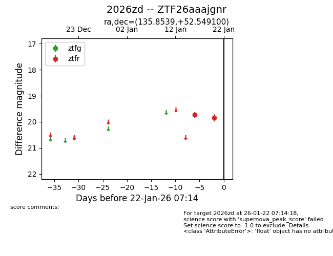
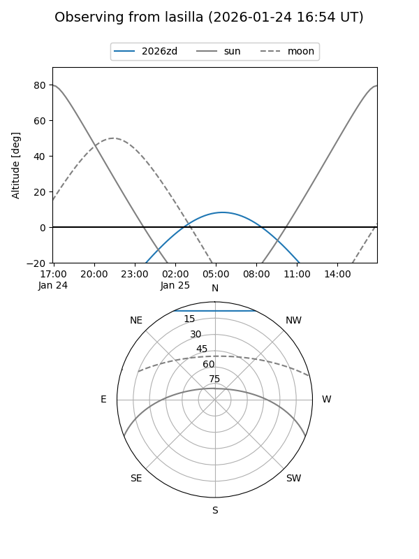
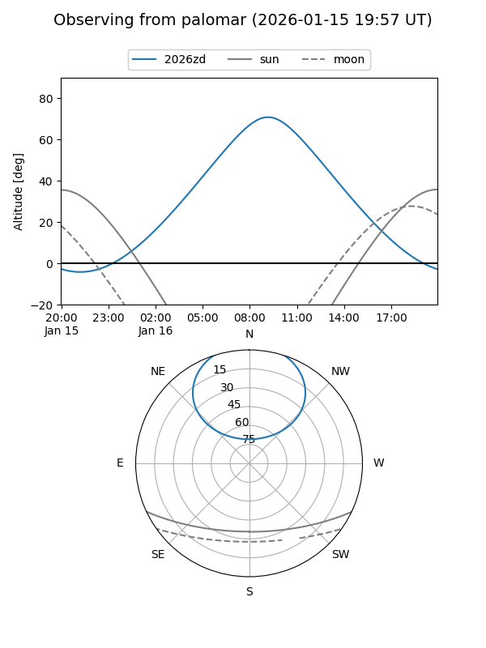
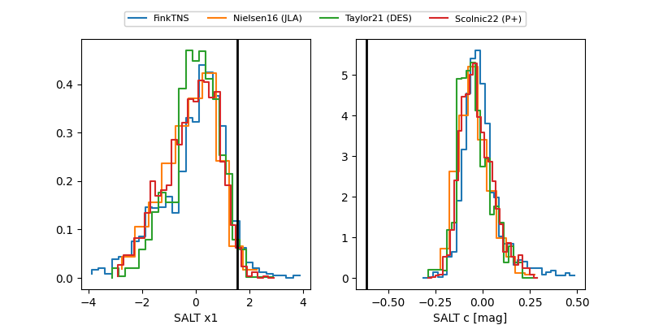

2026zd
Target 2026zd at 2026-01-16 07:00
Aliases and brokers:
FINK: link
Lasair: link
ALeRCE: link
TNS: link
YSE: link
alt names
ZTF26aaajgnr (ztf,fink_ztf)
2026zd (tns,yse)
Coordinates:
equatorial (ra, dec) = 135.8539,+52.54910
equatorial (HMS+DMS) = 09:03:24.94,+52:32:56.76
galactic (l, b) = (165.4850,+41.04871)
Flags:
Photometry:
last ztfr=19.73
1 ztfr detections
Lightcurve

Visibility


Additional plots
